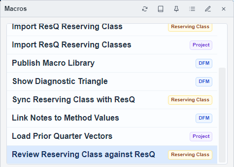

ResQ Import and Review
Review a ResQ transfer before applying it
Choose the right macro for a read-only comparison, an import, or synchronization, and verify the project and segment before starting.
Start from the Intended Segment
- Open the Project Page for the project you intend to compare or transfer.
- Select its segment. The training guide uses Monthly_Insurance_Dataset and Commercial Auto → All States → CH02 → Comprehensive.
- Open Macro and read the selected ResQ macro's description.
- Confirm that the corresponding ResQ project and segment are available through your organization's configured ResQ service before starting a transfer.

Compare Before Writing
- Select Review Reserving Class against ResQ and choose Run.
- Wait for the comparison to finish and open its Excel workbook.
- Use the workbook's Summary links to inspect differences between Arco and ResQ values, Result Selections, and DFM notes.
- Resolve unexpected differences before choosing a write action.
This review macro reads both sides and produces a comparison workbook. It does not write changes back to Arco or ResQ.
Import Selected ResQ Items
- Select Import ResQ Reserving Class and choose Run.
- In the transfer review, tick only the datasets and methods you intend to import.
- Inspect any warning that an Arco copy is newer. Follow the item links to review it before accepting an overwrite.
- Confirm the overwrite only when the selected ResQ copies should replace those Arco items, then wait for the final result.
Check the Imported Result
- Return to the Project Page and choose Refresh Table.
- Open imported triangles and vectors, and compare their origin labels, period lengths, and values.
- Open imported DFM or Result Selection methods to inspect selections and Notes.
- Read the import result for warnings or failed items before relying on the output.
Sync Reserving Class with ResQ is a separate workflow that previews the comparison and proposed direction before applying changes. Read that direction carefully; use the read-only review macro when you only need a comparison.